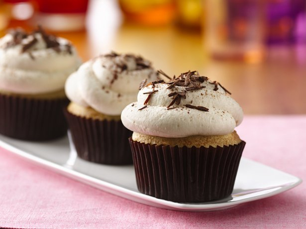

Gluten Free Tiramisu Cupcakes

Looking for a gluten-free Italian-inspired dessert? Try these decadent tiramisu cupcakes, topped with whipped cream and chocolate shavings.
Ingredients
- 2 boxes Betty Crocker® Gluten Free yellow cake mix
- 2 cups butter, softened
- 1 1/3 cups water
- 4 teaspoons gluten-free vanilla
- 6 eggs
- 2 cups whipping cream
- 1 container (8 oz) gluten-free mascarpone cheese
- 3 tablespoons coffee-flavored liqueur
- 1 tablespoon cold brewed coffee
- 1 cup powdered sugar
- 1/4 cup coffee-flavored liqueur
- 1/8 teaspoon unsweetened baking cocoa
- 1/4 cup dark chocolate shavings
Steps
- Heat oven to 350°F. Place paper baking cup in each of 24 regular-size muffin cups. In large bowl, beat cake mixes, butter, water, vanilla and eggs with electric mixer on low speed 30 seconds, then on medium speed 2 minutes, scraping bowl occasionally. Divide batter evenly among muffin cups, filling each three-fourths full.
- Bake 20 to 25 minutes or until toothpick inserted in center comes out clean. Cool 5 minutes; remove from pan to cooling rack. Cool completely, about 30 minutes.
- In large bowl, beat whipping cream with electric mixer on high speed until stiff. Add mascarpone cheese, 3 tablespoons liqueur, cold brewed coffee and the powdered sugar; beat just until well blended and thick enough to pipe or spread (do not overbeat).
- In shallow bowl, place 1/4 cup liqueur. Dip tops of each cooled cupcake into liqueur. Top with whipped cream mixture. Sprinkle with cocoa and chocolate shavings. Store loosely covered in refrigerator.